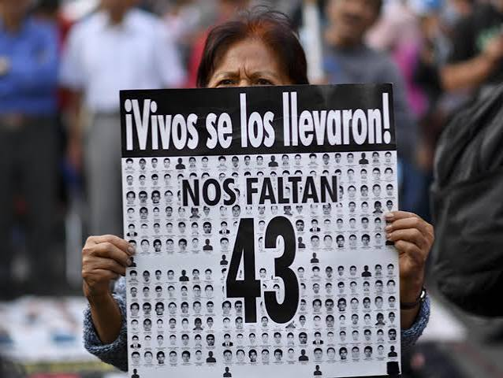
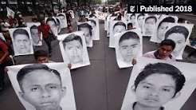

¿Qué sucedió?
La noche del 26 al 27 de septiembre de 2014, estudiantes de la Escuela Normal Rural Raúl Isidro Burgos de Ayotzinapa fueron atacados en la ciudad de Iguala, Guerrero, México. Los jóvenes se encontraban en la zona en el contexto de sus preparativos para asistir a una manifestación en Ciudad de México. Durante los acontecimientos hubo ataques armados, persecuciones y detenciones. Cuarenta y tres estudiantes fueron víctimas de desaparición forzada. El caso provocó una profunda indignación nacional e internacional y dio lugar a investigaciones oficiales, protestas y exigencias de justicia por parte de las familias.
Los hechos ocurrieron entre la noche del 26 y la madrugada del 27 de septiembre de 2014, principalmente en Iguala, estado de Guerrero, México. El caso se desarrolló durante el gobierno del presidente Enrique Peña Nieto.

Lo que está documentado
* Los 43 estudiantes desaparecidos pertenecían a la Escuela Normal Rural Raúl Isidro Burgos, ubicada en Ayotzinapa, Guerrero.
* Durante los ataques de aquella noche también fueron asesinadas seis personas y otras resultaron heridas.
* Las investigaciones identificaron la participación de policías municipales y miembros del grupo criminal Guerreros Unidos, además de indicios sobre la intervención de otros agentes y autoridades.
* El Grupo Interdisciplinario de Expertos Independientes (GIEI), creado con la participación de la Comisión Interamericana de Derechos Humanos, encontró inconsistencias en la versión oficial inicial, particularmente en la afirmación de que todos los estudiantes habían sido incinerados en el basurero de Cocula.
* En 2022, la Comisión para la Verdad y Acceso a la Justicia en el Caso Ayotzinapa calificó los hechos como un crimen de Estado y señaló la participación de integrantes del grupo criminal y de agentes de distintas instituciones estatales. También informó que, hasta ese momento, solo se había logrado identificar genéticamente a tres de los estudiantes.
Lo que aún no se sabe
A pesar de los años de investigaciones, no se ha esclarecido por completo el destino de los 43 estudiantes ni se han localizado e identificado todos sus restos. Tampoco se ha reconstruido de manera definitiva cada etapa de los ataques, las detenciones y las desapariciones. Siguen existiendo interrogantes sobre la cadena de mando, la participación de distintas autoridades y las razones precisas por las que los estudiantes fueron atacados. Las familias continúan exigiendo verdad, justicia y la localización de sus seres queridos.
